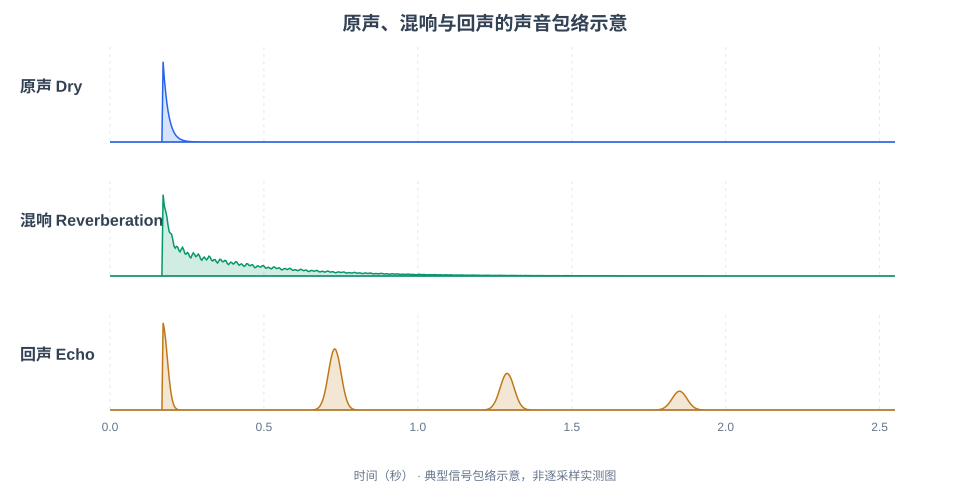

混响（Reverberation）与回声（Echo）：原理和试听对比
核心区别：混响是大量密集反射声叠加形成连续、逐渐衰减的拖尾；回声是延迟后的声音可以被明显分辨为重复。
1. 先听声音，再理解概念
实验 A：拍手声（最容易区分）
拍手脉冲非常短，便于听清“持续拖尾”与“隔一会儿又出现一次”的差异。
| 类型 | 试听音频 | 应该听到什么 |
|---|---|---|
| 04 原声 Dry | 下载 WAV | 很短的一声“啪”，结束得很快。 |
| 05 混响 Reverb | 下载 WAV | 一声之后出现密集拖尾，逐渐衰减。 |
| 06 回声 Echo | 下载 WAV | 约 0.56 秒后又出现一声清晰“啪”。 |
连续对比：原声 → 混响 → 回声下载 WAV
实验 B：合成仿人声音节（AFE / ASR 场景）
这是双音节的人声近似合成音（不是自然语言 TTS）。三段音频均使用同一段原始音，区别仅在于加入的声学效果。
| 类型 | 试听音频 | 应该听到什么 |
|---|---|---|
| 01 原声 Dry | 下载 WAV | 音节结束后很快安静。 |
| 02 混响 Reverb | 下载 WAV | 音节重叠，尾音逐渐变弱。 |
| 03 回声 Echo | 下载 WAV | 延迟后又出现一遍可辨认的声音。 |
连续对比：原声 → 混响 → 回声下载 WAV
示意波形（包络）

2. 概念对比
| 对比项 | 混响（Reverberation） | 回声（Echo） |
|---|---|---|
| 听感 | 密集反射声，连续拖尾 | 可分辨的延迟重复声 |
| 常见场景 | 房间、教堂、会议室 | 山谷、远距离反射墙面 |
| 时间分布 | 早期反射 + 密集后期反射 | 突出的长延迟反射或重复路径 |
| 常用指标 | RT60、早期衰减时间 | 回声延迟、幅度、路径损耗 |
| 对 ASR 的影响 | 音节重叠、语音模糊 | 重复声音干扰识别 |
注意：混响不仅发生在尾音。说话时，之前声音的反射始终和当前声音叠加；声源停止后更容易听见混响拖尾。
3. 混响产生原理
说话人 / 扬声器 ├── 直达声 ─────────────────────┐ ├── 早期反射（墙壁/地板） ───────┼──→ 麦克风采集并叠加 └── 后期密集反射（多次反射） ─────┘
常用房间冲激响应（RIR）表达声音传播：y(t) = x(t) * h(t)。其中，x(t) 是原始信号，h(t) 包含传播与反射的信息，y(t) 是麦克风收到的信号；* 代表卷积。
RT60（混响时间）：声源停止后，混响声压级衰减 60 dB 的时间。本示例将算法衰减参数设置为约 1.3 秒，属于教学模拟而非房间实测。
4. 回声产生原理
简化公式：y(t) = x(t) + a · x(t − τ)，其中 a 是回声相对幅度，τ 是回声的延迟。本实验设置的重复时间为 560 ms、1120 ms、1680 ms，每次逐渐变弱。
5. 在语音系统 AFE / ASR 中如何处理
人声 + 房间混响 + 扬声器播放串音 + 环境噪声
↓
麦克风 PCM
↓
AFE 音频前端
├── AEC：声学回声消除
├── Dereverb：去混响
├── NS：噪声抑制
└── BF：多麦克风波束形成
↓
VAD / KWS / ASR
AEC（Acoustic Echo Cancellation） 通常借助扬声器参考信号，消除回放声音进入麦克风的声学回声。Dereverb 主要抑制目标人声在房间里产生的混响拖尾。AEC 所处理的“回声”也可能包含许多密集反射，不能简单理解成山谷里能分辨的重复声。各处理模块在真实工程中没有固定的统一顺序。
6. 总结
混响：声音后面跟着密密的、连续变小的尾巴。回声：声音过一段时间又明显出现一次。
建议闭眼听拍手声的 ABC 对比，判断哪段是连续拖尾，哪段有分离的重复“啪”。